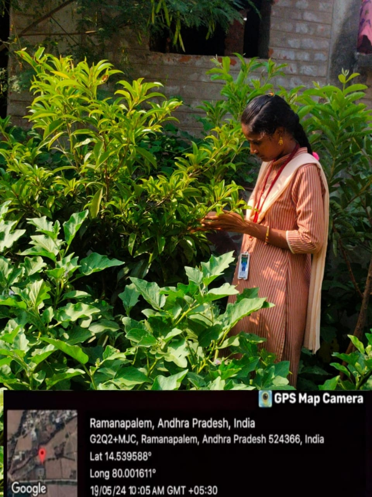
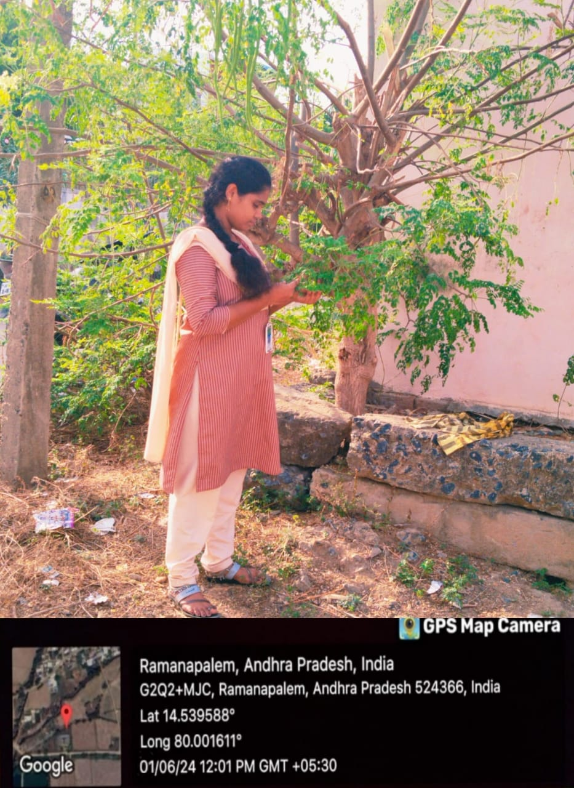
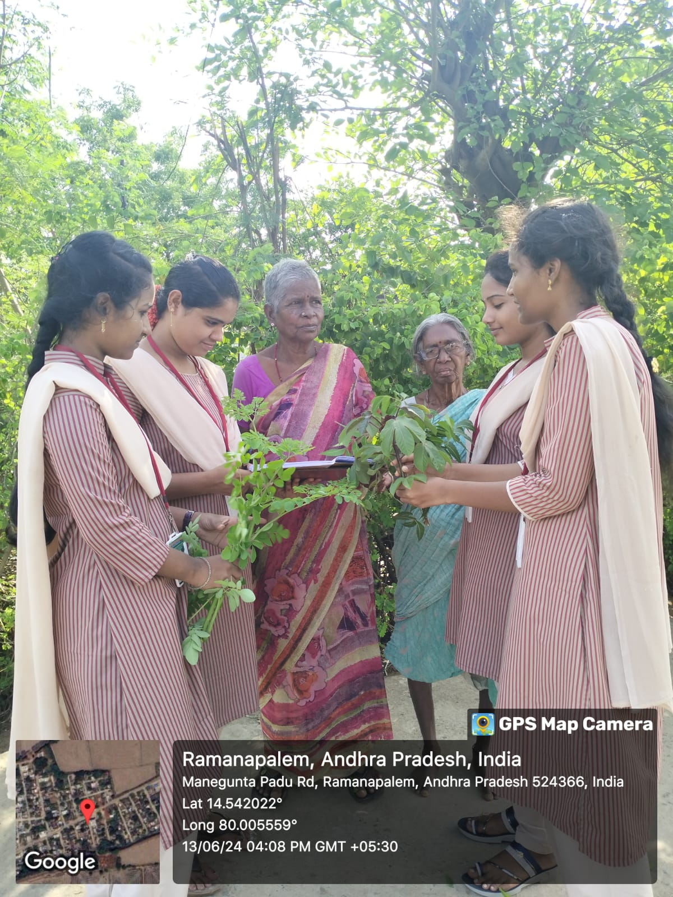

HERBAL PLANTS

INTRODUCTION
Ever since ancient times, in search for rescue for their disease, the people looked for drugs in nature. The beginnings of the medicinal plants’ use were instinctive, as is the case with animals. In view of the fact that at the time there was not sufficient information either concerning the reasons for the illnesses or concerning which plant and how it could be utilized as a cure, everything was based on experience. In time, the reasons for the usage of specific medicinal plants for treatment of certain diseases were being discovered; thus, the medicinal plants’ usage gradually abandoned the empiric framework and became founded on explicatory facts. Until the advent of iatrochemistry in 16th century, plants had been the source of treatment and prophylaxis.Nonetheless, the decreasing efficacy of synthetic drugs and the increasing contraindications of their usage make the usage of natural drugs topical again.The oldest written evidence of medicinal plants’ usage for preparation of drugs has been found on a Sumerian clay slab from Nagpur, approximately 5000 years old. It comprised 12 recipes for drug preparation referring to over 250 various plants, some of them alkaloid such as poppy, henbane, and mandrake.The Indian holy books Vedas mention treatment with plants, which are abundant in that country. Numerous spice plants used even today originate from India: nutmeg, pepper, clove, etc.
OBJECTIVES
The survey of herbal plants objective is to gain knowledge about the medicinal values present in them. To work for the conservation, propagation, research & development and other activities related to medicinal plants.To work for development of local awareness of the value of Medicinal Plants as well as the need for their conservation and bringing the benefits of Medicinal Plants to support local health care systems and livelihoods.To provide information, technology and educate the common people to develop skills in identifying opportunities for encouraging local processing and enterprise development of increased local value for the Medicinal Plants.
CHALLENGES
Medicinal plants face many challenges, including environmental, regulatory, and socioeconomic issues: Environmental Extreme temperatures, drought, salinity, and other environmental stresses can disrupt the metabolic and physiological processes of medicinal plants, limiting their productivity and quality. Climate change is also considered a major challenge for medicinal plants, which contain volatile aromatic compounds that can be altered by drought and heat. Regulatory Lack of regulation and infrastructure, as well as unscientific use of medicinal plants, can impede the growth of herbal medicine. Socioeconomic Socioeconomic disparity can threaten the sustainable and equitable use of medicinal plants.
MY ACTIVITY
As part of my community service project,I have taken permission from sachivalayam .After I started survey in nearby areas ,I explained the people the advantage of herbal plants,our team embarked on an initiative to promote traditional medicine and wellness in our local community. We focused on aurvedha plants, neem, and aloe vera, which have been used for centuries to cure various ailments. Our goal was to educate and empower community members to adopt natural remedies for a healthier lifestyle. We started by conducting workshops and seminars, where we shared knowledge about the benefits and uses of aurvedha plants, neem, and aloe vera. We also demonstrated how to prepare natural remedies using these plants. The response was overwhelming, with many community members expressing interest and enthusiasm. To further support our initiative, we established a community garden where we cultivated aurvedha plants, neem, and aloe vera. This provided a sustainable source of natural remedies for the community. We also distributed mortar and pestles to community members, enabling them to prepare their own remedies. The impact of our project was significant. Community members reported improved health and wellbeing, and a reduced reliance on synthetic medicines. Our project also fostered a sense of community and social connection, as people came together to learn and share knowledge. Through this project, we learned the value of community service and the power of natural remedies in promoting health and wellbeing. We plan to continue and expand our project, inspiring others to join us in empowering community health through natural remedies.
  
CONCLUSION
Plants, herbs, and ethnobotanicals have been used since the early days of humankind and are still used throughout the world for health promotion and treatment of disease. Plants and natural sources form the basis of today’s modern medicine and contribute largely to the commercial drug preparations manufactured today. About 25% of drugs prescribed worldwide are derived from plants. Still, herbs, rather than drugs, are often used in health care. For some, herbal medicine is their preferred method of treatment. For others, herbs are used as adjunct therapy to conventional pharmaceuticals. However, in many developing societies, traditional medicine of which herbal medicine is a core part is the only system of health care available or affordable. Regardless of the reason, those using herbal medicines should be assured that the products they are buying are safe and contain what they are supposed to, whether this is a particular herb or a particular amount of a specific herbal component. Consumers should also be given science-based information on dosage, contraindications, and efficacy. To achieve this, global harmonization of legislation is needed to guide the responsible production and marketing of herbal medicines. If sufficient scientific evidence of benefit is available for an herb, then such legislation should allow for this to be used appropriately to promote the use of that herb so that these benefits can be realized for the promotion of public health and the treatment of disease.